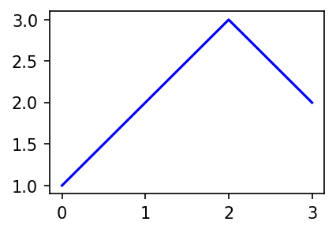
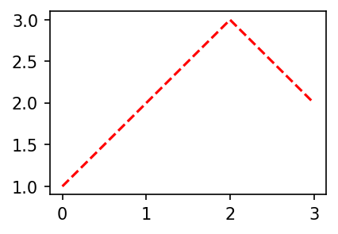
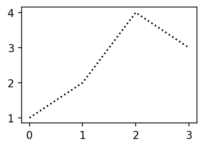
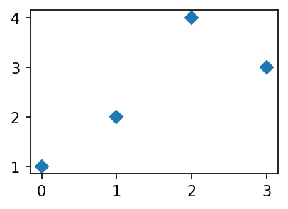
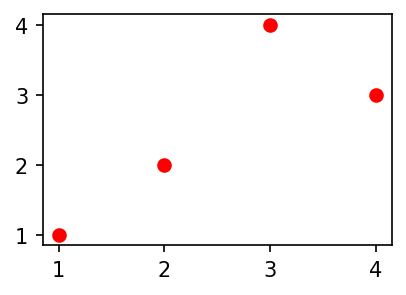
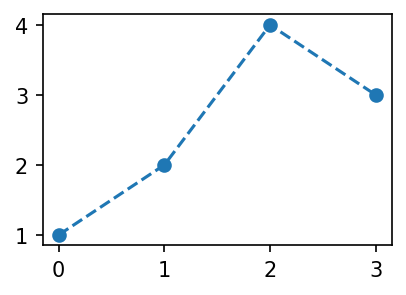
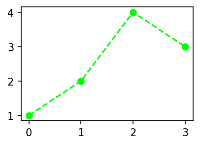
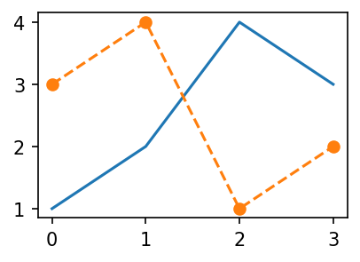
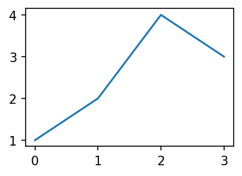
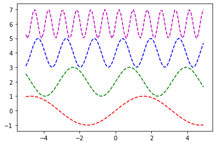

# {{<video >}}01wk-2: 라인플랏, 산점도, 객체지향적 시각화
matplotlib

강의영상
Imports
import matplotlib.pyplot as plt
import numpy as np
import matplotlib
matplotlib.rcParams['figure.figsize'] = (3, 2)
matplotlib.rcParams['figure.dpi'] = 150Line plot
기본플랏
plt.plot([1,2,3,2])모양변경
plt.plot([1,2,3,2],'--')색상변경
- 예시1
plt.plot([1,2,3,2],'r')
- 예시2
plt.plot([1,2,3,2],'b')
모양 + 색상변경
- 예시1
plt.plot([1,2,3,2],'--r')
- 예시2: 순서변경 가능
plt.plot([1,2,3,2],'r--')원리?
- r--등의 옵션은 Markers + Line Styles + Colors 의 조합으로 표현가능
ref: https://matplotlib.org/stable/api/_as_gen/matplotlib.pyplot.plot.html
--r: 점선(dashed)스타일 + 빨간색r--: 빨간색 + 점선(dashed)스타일:k: 점선(dotted)스타일 + 검은색k:: 검은색 + 점선(dotted)스타일
- 우선 Marker를 무시하면 Line Styles + Color로 표현가능한 조합은 \(4\times 8=32\) 개
| character | description |
|---|---|
| ‘-’ | solid line style |
| ‘–’ | dashed line style |
| ‘-.’ | dash-dot line style |
| ‘:’ | dotted line style |
| character | color |
|---|---|
| ‘b’ | blue |
| ‘g’ | green |
| ‘r’ | red |
| ‘c’ | cyan |
| ‘m’ | magenta |
| ‘y’ | yellow |
| ‘k’ | black |
| ‘w’ | white |
| character | description |
|---|---|
| ‘.’ | point marker |
| ‘,’ | pixel marker |
| ‘o’ | circle marker |
| ‘v’ | triangle_down marker |
| ‘^’ | triangle_up marker |
| ‘<’ | triangle_left marker |
| ‘>’ | triangle_right marker |
| ‘1’ | tri_down marker |
| ‘2’ | tri_up marker |
| ‘3’ | tri_left marker |
| ‘4’ | tri_right marker |
| ‘8’ | octagon marker |
| ‘s’ | square marker |
| ‘p’ | pentagon marker |
| ‘P’ | plus (filled) marker |
| ’*’ | star marker |
| ‘h’ | hexagon1 marker |
| ‘H’ | hexagon2 marker |
| ‘+’ | plus marker |
| ‘x’ | x marker |
| ‘X’ | x (filled) marker |
| ‘D’ | diamond marker |
| ‘d’ | thin_diamond marker |
| ‘|’ | vline marker |
| ’_’ | hline marker |
- 예시1
plt.plot([1,2,4,3],'b-.')
- 예시2
plt.plot([1,2,4,3],'k:')
- 예시3: line style + color 조합으로 사용하든 color + line style 조합으로 사용하든 상관없음
plt.plot([1,2,4,3],'-.b')
plt.plot([1,2,4,3],':k')
- 예시4: line style을 중복으로 사용하거나 color를 중복으로 쓸 수 는 없다.
plt.plot([1,2,4,3],'br')ValueError: 'br' is not a valid format string (two color symbols)
- 예시5: 색이 사실 8개만 있는건 아니다.
ref: https://matplotlib.org/2.0.2/examples/color/named_colors.html
plt.plot([1,2,4,3],color='lime')- 예시6: 색을 바꾸려면 hex코드를 넣는 방법이 젤 깔끔함
ref: https://htmlcolorcodes.com/
plt.plot([1,2,4,3],color='#7E277E')- 예시7: 당연히 라인스타일도 4개만 있진 않음
ref: https://matplotlib.org/stable/gallery/lines_bars_and_markers/linestyles.html
plt.plot([1,2,4,3],linestyle=(0, (10, 1)))Scatter plot
원리
- 그냥 마커를 설정하면 끝!
plt.plot(x,y,'o')기본플랏
- 예시1
plt.plot([1,2,4,3],'x')
- 예시2
plt.plot([1,2,4,3],'D')
색깔변경
- 예시1
plt.plot(x,y,'or')- 예시2
plt.plot(x,y,'db')- 예시3
plt.plot(x,y,'bx')
dot-connected plot
- 예시1: 마커와 라인스타일을 동시에 사용하면 dot-connected plot이 된다.
plt.plot([1,2,4,3],'--o')- 예시2: 당연히 색도 적용가능함
plt.plot([1,2,4,3],'--or')
- 예시3: 서로 순서를 바꿔도 상관없다.
plt.plot([1,2,4,3],'r--o')
- 예시4: 색만 따로 바꾸고싶다면?
plt.plot([1,2,4,3],'--o',color='lime')
겹쳐 그리기
- 예시1
plt.plot([1,2,4,3])
plt.plot([3,4,1,2],'--o')- 예시2
plt.plot([1,2,4,3],color='C1')
plt.plot([3,4,1,2],'--o',color='C0')- 예시3
x=np.linspace(0,1,100)
eps = np.random.randn(100)*0.2
y= 2*x + eps
plt.plot(x,y,'.')
plt.plot(x,2*x,'--')
- summary: boxplot, histogram, lineplot, scatterplot
- 라인플랏: 추세
- 스캐터플랏: 두 변수의 관계
- 박스플랏: 분포(일상용어)의 비교, 이상치
- 히스토그램: 분포(통계용어)파악
- 바플랏: 크기비교
객체지향적 시각화
예비학습
# 예비학습1 – 그림을 저장했다가 꺼내보고 싶다.
- 그림을 그리고 저장하자.
plt.plot([1,2,4,3])
fig = plt.gcf()
- 다른그림을 그려보자.
plt.plot([1,2,4,3],'--o')
- 저장한 그림은 언제든지 꺼내볼 수 있음
fig
#
# 예비학습2 – fig 는 뭐야?
#fig??
type(fig)matplotlib.figure.FigureFigure라는 클래스에서 찍힌 인스턴스
- 여러가지 값, 기능이 저장되어 있겠음.
fig.axes[<Axes: >]ax = fig.axes[0]yaxis= ax.yaxis
xaxis= ax.xaxislines = ax.get_lines()
line = lines[0]- 계층구조: Figure \(\supset\) [Axes,…] \(\supset\) YAxis, XAxis, [Line2D,…]
type(fig)matplotlib.figure.Figure1. .axes 로 Axes 를 끄집어냄
ax = fig.axes[0]
type(ax)matplotlib.axes._axes.Axes2. .xaxis, .yaxis 로 Axis 를 끄집어냄
yaxis = ax.yaxis
xaxis = ax.xaxis
type(yaxis), type(xaxis)(matplotlib.axis.YAxis, matplotlib.axis.XAxis)3. .get_lines()로 Line2D를 끄집어냄
lines = ax.get_lines()
line=lines[0]
type(line)matplotlib.lines.Line2D- 오브젝트내용 확인 (그닥 필요 없음)
line.properties()['data'](array([0., 1., 2., 3.]), array([1, 2, 4, 3]))- matplotlib의 설명
ref: https://matplotlib.org/stable/gallery/showcase/anatomy.html#sphx-glr-gallery-showcase-anatomy-py

HW
제출: 이름(학번).ipynb, 이름(학번).html 형태로 정리하여 2개의 파일을 제출할 것 (작성방법 모르면 아래영상참고할것) - 즉 주피터노트북파일과 html파일을 모두 제출할 것
https://youtube.com/playlist?list=PLQqh36zP38-x3HQLeyrS7GLh70Dv_54Yg
- 영상1: 코랩으로 실습하는 경우
- 영상2: local 아나콘다로 실습하는 경우
1. 아래와 같은 그림을 그려라.
x = np.arange(-5,5,0.1)
y1 = np.sin(x)
y2 = np.sin(2*x) + 2
y3 = np.sin(4*x) + 4
y4 = np.sin(8*x) + 6#